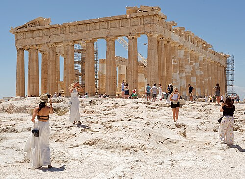
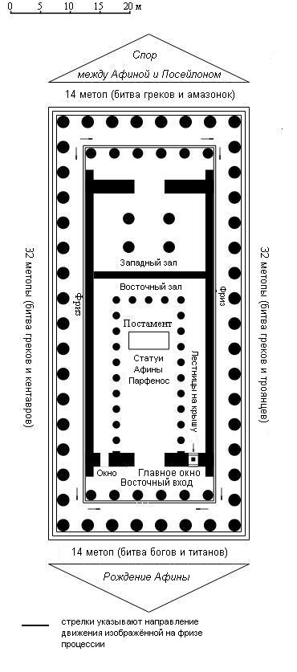

Парфенон (др. греч. Παρθενών, буквально «девичьи покои») — памятник античной архитектуры, древнегреческий храм, расположенный на афинском Акрополе. Главный храм в древних Афинах, посвящённый покровительнице этого города и всей Аттики, богине Афине-Палладе (Ἀθηνᾶ Παρθένος). Построен в 447−438 годах до н. э. архитектором Калликратом по проекту Иктина и украшен в 438−431 годах до н. э. под руководством Фидия при правлении Перикла. Одно из самых знаковых зданий в мире, возможно даже, самое известное — символ Афин «для нас сегодня, как и для греков любой эпохи». В настоящее время находится в полуразрушенном состоянии, ведутся восстановительные работы.

Парфенон в 2024 году.
Парфенон был построен в эпоху расцвета Афин, во время правления Перикла (V век до н. э.), как символ могущества города и поклонения его покровительнице — богине Афине Парфенос (Афине-Деве). Возведение храма началось в 447 году до н. э. на месте более раннего святилища, разрушенного персами в 480 году до н. э. Строительство финансировалось за счёт средств Делосского союза, что подчеркивало политическое и культурное лидерство Афин. Храм был завершён к 438 году до н. э., но работы над скульптурными украшениями (метопами, фризами, фронтонами) продолжались до 432 года до н. э. Главным скульптором и руководителем проекта был Фидий, создавший знаменитую статую Афины из золота и слоновой кости высотой 12 метров.
Архитектурные особенности:
- Построен из пентелийского мрамора, который со временем приобретает медовый оттенок.
- Колонны слегка наклонены к центру, а угловые — толще остальных, чтобы избежать эффекта «проваливания» конструкции.
- Стилобат (основание) имеет выпуклость, чтобы здание не казалось вогнутым.
- Метопы (92 плиты) изображали битвы греков с кентаврами, амазонками, гигантами и троянцами.
- Ионический фриз (160 м) показывал Панафинейскую процессию — главный праздник Афин.
- Фронтоны представляли рождение Афины (восточный) и спор Афины с Посейдоном за Аттику (западный).

Планировка Парфенона.